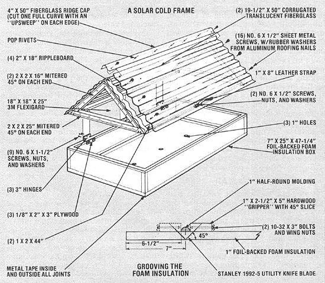

A Seed-Starting Solar Cold Frame
March/April 1981
Plant your cold-sensitive vegetables before the last spring frost with . . .
A cold frame is one of the best ways for an aspiring gardener (especially one whose bankroll won't support the purchase or the construction of a full-sized greenhouse) to get a head start on a summer vegetable plot. In most parts of the country, one of the mini-hothouses will help you beat the final spring frost by three to four weeks . . . and it can even extend the growing season enough to let you get in an extra succession planting!
Cold frames aid growing plants in two ways. First, the devices admit sunlight to enable seeds to sprout into up-and-coming edibles. And, in much the same fashion as do solar collectors, they convert solar energy to heat ...in this case to maintain air and soil temperatures which are conducive to growing. Consequently, the two major concerns when designing a cold frame are to let the sun's rays in , and to retain heat.
In keeping with state-of-the-art energy efficiency, we have designed a passively solar, earth-sheltered, and well-insulated cold frame. The box is built from a sheet of inch-thick, toil-backed foam insulation board. Using the technique developed while constructing MOTHER's Heat Grabber (the article ran in No. 47 . . . see page 148 of this magazine for back issue ordering information) and used frequently in subsequent solar projects, we trimmed out 7" corners from a 39" X 61-1/4" section of the insulation, and carved 90° grooves in the foam so that the sides and ends could be folded up without our having to cut the exterior foil. (See the small illustration for details. Note that - in order to achieve the proper angle - the slicing tool must be drawn first along one side of the half-round-molding guide, then reversed to cut along the other side.)
Once the insulation board was shaped to the dimensions shown in the large drawing, we further insured a good seal by lining the joints - inside and out - with metal tape.
Two triangular frames built from 2 X 2 lumber hold up the corrugated fiberglass lid, and the 18" X 18" X 25" (outside dimensions) sides describe an isosceles triangle. Once the pieces have been mitered and screwed together, tack on 18"-long strips of ripple board, and connect the two frames by butting 44" lengths of 1 X 2 between them.
The glazing adds additional stiffening to the lid assembly, and both of the 19-1/2" X 50" sheets and the 4" X 50" ridge cap can be cut from a single 10' piece of corrugated translucent fiberglass. Attach the sheets to the ripple board by drilling 1/8" holes in the material and sinking No. 6 X 1/2" sheet metal screws - fitted with rubber washers from aluminum roofing nails - into the openings. Then pop-rivet the fiberglass cap over the joint between the two sheets at the peak of the roof and seal each fastener with a dab of silicone caulk. (See the illustration for placement of rivets and screws.) An additional application of sealant between the ripple board and the fiberglass, and along the seam where the material contacts the horizontal 1 X 2's, will help to retain heat. To close in the ends of the cold frame's lid, cut out two 18" X 18" X 25" triangles of 3M Flexigard (or a similar material) and staple the plastic - spacing the fasteners three inches apart - to the ends of the frame.
Though you could simply set the lid atop the box, we decided that a trio of hinges and a handle would provide a more convenient arrangement for opening the cold frame during the heat of the day. Three standard hinges were attached to the outside of the insulation box and the 1 X 2 on the frame, and the 1-1/2" screws and nuts were backed (on the inside of the box) with 2" X 3" pieces of 1/8" plywood. On the other side of the lid, we fastened a 1 " X 8" chunk of leather to the 1 X 2, using panhead screws, to serve as a handle.
To put the cold frame to work, simply prepare a 25" X 48" hole that's 6" deep, cut three 1" holes in the bottom of the box for drainage, and set it into the pit. Then open the lid and fill the container with about five inches of a combination of the earth that was removed from the hole and whatever fertile soil you prefer. With the ground and insulation preserving a favorable environment for growing and the sun beaming down in the daytime, you should be able to start seeds safely three weeks before the last frost predicted by your agricultural extension office. And once the final freezing chill has passed, you can set out thriving seedlings in your garden . . . ready to resist pests and grow their way toward your dinner plate!
 |
 |
|